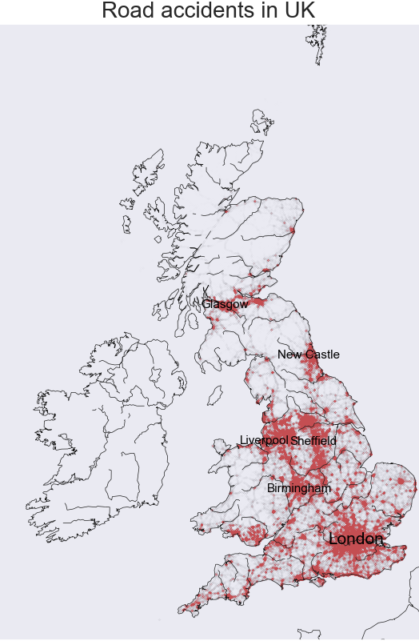

Road accidents are a major cause of concern worldwide, and the situation is no different in Great Britain. With the increasing number of vehicles on the roads each year, it’s essential to analyze the available data to identify patterns and trends and take proactive measures to reduce road accidents. This blog post will provide a detailed report of personal injury road accident datasets available on Kaggle to gain a better understanding of road safety in Great Britain.
The datasets provide information on the circumstances of accidents, the types of vehicles involved, and the resulting casualties, making them a valuable resource for researchers and policymakers alike. However, it’s important to note that these statistics only cover personal injury accidents that are reported to the police and recorded using the STATS19 form(a form that offers features to retrieve and arrange data on road accidents, allowing users to access the UK’s authorized database of road traffic casualties.), so we must keep this limitation in mind when interpreting the results.
Dataset Description
The dataset in use is “The Great Britain Road Accident 2005-2016” dataset from Kaggle. Along with the accident report dataset, the dataset includes two other sub-datasets: Vehicle Description and Casualty Reference. The data as a whole was retrieved from the UK Department of Transportation government website.
The dataset has 1.7 million rows of data with 32 variable columns. For the 7% of null data in the dataset the rows are simply dropped in accordance to when they are beign analyzed. A couple of variables have integers instead of categorical descriptions, hence, the encoded values for variables such as light condition, road type, weather condition etc are mapped to their actual values for effective visualization.
The key variables in use for analysis are as follows:
Latitude and longitude: The geographic location of the data where the accident occured.
Accident Severity: The damage severity of accident (categorized by 1, 2 and 3(3 being the most severe))
Accident Day: The day of the week.
Accident Time: The time of the day.
Speed zone: The speed limit roads for accident.
Vehicle: Type of vehicle resulting in most number of accidents- cars/SUVs/Trucks, Bus etc
Road Type: Type of road that saw most number of the accidents
Light Condition: The light outside when the accident occured. Morning sun, midday light, dawn, dusk etc
The gender of accident: male, female, or others
Age: The driver’s age
Officers at scene: Number of police offices and local administratives that arrived in scene after the accident occured.
Road Surface condition: Conditions such as wet, damp, dry etc
After reading the data through the file, adjusting the date and time format, reverse encoding the numerical to categorical values for the table, filtering and dropping the null values in accordance to what information is needed where, the final table summarizes to this:
Code
#Installing and importing packagesimport pandas as pdpd.options.mode.chained_assignment =Noneimport numpy as npimport seaborn as snsimport matplotlib.pyplot as pltimport warningswarnings.filterwarnings("ignore", category=FutureWarning)accidents = pd.read_csv("../data/accidents.csv")date_format ="%d/%m/%Y"accidents["Date"] = pd.to_datetime(accidents["Date"], format=date_format)accidents.isnull().sum()accidents = accidents[accidents['Time'].notna()]accidents = accidents[accidents['Date'].notna()]#making a new column called Hours to use it later for visualizationaccidents["Hours"] = accidents["Time"].apply(lambda x: int(str(x).split(":")[0]))accidents["Year"] = accidents["Date"].apply(lambda x: int(str(x).split("-")[0]))accidents["Month"] = accidents["Date"].apply(lambda x: int(str(x).split("-")[1]))accidents["Day"] = accidents["Date"].apply(lambda x: int(str(x).split("-")[2].split(" ")[0]))accidents.drop(['Location_Easting_OSGR', 'Location_Northing_OSGR','LSOA_of_Accident_Location','Junction_Control', 'Local_Authority_.District.', 'Local_Authority_.Highway.', 'X1st_Road_Class', 'X1st_Road_Number', 'X2nd_Road_Class', 'X2nd_Road_Number','Pedestrian_Crossing.Human_Control', 'Pedestrian_Crossing.Physical_Facilities' ], axis=1, inplace=True)accidents.drop(["Time"], axis=1, inplace=True)new_data = {1: "Daylight", 4: "Darkness: street lights present and lit", 5: "Darkness: street lights present but unlit", 6: "Darkness: no street lighting",7: "Darkness: street lighting unknown"}accidents["Light_Conditions"] = accidents["Light_Conditions"].map(new_data)#Reverse encoding the values of the Weather Conditionsnew_data = {1: "Fine without high winds", 2:"Raining without high winds",3:"Snowing without high winds", 4:"Fine with high winds",5:"Raining with high winds", 6:"Snowing with high winds",7:"Fog or mist — if hazard", 8:"Other", 9:"Unknown"}accidents["Weather_Conditions"] = accidents["Weather_Conditions"].map(new_data)#Reverse encoding the values of the Road Surface Conditionsnew_data = {1: "Dry", 2: "Wet/Damp", 3:"Snow", 4:"Frost/Ice", 5:"Flood"}accidents["Road_Surface_Conditions"] = accidents["Road_Surface_Conditions"].map(new_data)#Reverse encoding the values of the Carriageway Hazardsnew_data = {0: "None", 1: "Dislodged vehicle", 2:"Other obects", 3:"Previous accident", 6:"Pedestrian", 7:"Animal"}accidents["Carriageway_Hazards"] = accidents["Carriageway_Hazards"].map(new_data)#Reverse encoding the values of the Did_Police_Officer_Attend_Scene_of_Accidentnew_data = {1: "Yes", 2: "No"}accidents["Did_Police_Officer_Attend_Scene_of_Accident"] = accidents["Did_Police_Officer_Attend_Scene_of_Accident"].map(new_data)#Reverse encoding the values of the Special_Conditions_at_Sitenew_data = {0: "None",1: "Auto traffic signal out",2: "Auto traffic signal partially defective",3: "Permanent road signing or marking defective or obscured",4: "Roadworks",5: "Road surface defective",6: "Oil or diesel",7: "Mud"}accidents["Special_Conditions_at_Site"] = accidents["Special_Conditions_at_Site"].map(new_data)#Reverse encoding the values of the Road_Typenew_data = {1: "Roundabout",2: "One way street",3: "Dual carriageway",6: "Single carriageway",7: "Slip road",9: "Unknown"}accidents["Road_Type"] = accidents["Road_Type"].map(new_data)#Reverse encoding the values of the Junction_Detailnew_data = {0: "Not at or within 20 metres of junction", 1: "Roundabout",2: "Mini roundabout",3: "T or staggered junction",4: "Slip road",5: "Crossroads",6: "Junction more than four arms (not RAB)",7: "Using private drive or entrance",8: "Other junction"}accidents["Junction_Detail"] = accidents["Junction_Detail"].map(new_data)new_data = {1: "Sunday", 2: "Monday",3: "Tuesday",4: "Wednesday",5: "Thursday",6: "Friday",7: "Saturday"}accidents["Day_of_Week"] = accidents["Day_of_Week"].map(new_data)new_data = {1: "Urban Area", 2: "Rural Area",3: "Unknown"}accidents["Urban_or_Rural_Area"] = accidents["Urban_or_Rural_Area"].map(new_data)accidents.head()
Accident_Index
Longitude
Latitude
Police_Force
Accident_Severity
Number_of_Vehicles
Number_of_Casualties
Date
Day_of_Week
Road_Type
...
Weather_Conditions
Road_Surface_Conditions
Special_Conditions_at_Site
Carriageway_Hazards
Urban_or_Rural_Area
Did_Police_Officer_Attend_Scene_of_Accident
Hours
Year
Month
Day
0
200501BS00001
-0.191170
51.489096
1
2
1
1
2005-01-04
Tuesday
Single carriageway
...
Raining without high winds
Wet/Damp
None
None
Urban Area
Yes
17
2005
1
4
1
200501BS00002
-0.211708
51.520075
1
3
1
1
2005-01-05
Wednesday
Dual carriageway
...
Fine without high winds
Dry
None
None
Urban Area
Yes
17
2005
1
5
2
200501BS00003
-0.206458
51.525301
1
3
2
1
2005-01-06
Thursday
Single carriageway
...
Fine without high winds
Dry
None
None
Urban Area
Yes
0
2005
1
6
3
200501BS00004
-0.173862
51.482442
1
3
1
1
2005-01-07
Friday
Single carriageway
...
Fine without high winds
Dry
None
None
Urban Area
Yes
10
2005
1
7
4
200501BS00005
-0.156618
51.495752
1
3
1
1
2005-01-10
Monday
Single carriageway
...
Fine without high winds
Wet/Damp
None
None
Urban Area
Yes
21
2005
1
10
5 rows × 23 columns
Analysis and Visualizations
Data analysis and visualizations are extremely crucial as they help to uncover patterns, trends, and insights that might not be apparent from the raw data alone allowing a researcher to communicate their findings effectively and make informed decisions based on the data.
Code
import matplotlib.dates as mdates# Define x-axis ticksticks =range(0, 24)# Define x-axis tick labelstick_labels = [mdates.num2date(mdates.datestr2num(f'{i}:00')).strftime('%I %p') for i inrange(0, 24)]def determine_day(x):if x in ["Saturday", "Sunday"]:return"Weekend"else:return"Weekday"accidents["Type_of_Day"] = accidents['Day_of_Week'].apply(determine_day)sns.lineplot( data=accidents.groupby(['Hours', "Type_of_Day"]).size().reset_index(name='count'), x='Hours', y='count', hue="Type_of_Day")plt.annotate('Peak Office Travel Hours', xy=(7.5, 123000), xycoords='data', xytext=(0.01, .99), textcoords='axes fraction', va='top', ha='left', arrowprops=dict(facecolor='black', shrink=0.05))plt.annotate('Peak Office Travel Hours', xy=(16.5, 130000), xycoords='data', xytext=(0.01, .99), textcoords='axes fraction', va='top', ha='left', arrowprops=dict(facecolor='black', shrink=0.05))plt.xlabel("Hour of the day")plt.ylabel("Number of accidents")plt.title("Number of accidents in each hour")plt.show()
The line plot depicted above illustrates the frequency of accidents per hour of the day. Rush hours, particularly at 8:00 AM and 6:00 PM, witnessed the highest number of accidents due to heavy traffic, while the frequency decreased during non-peak hours when individuals were engaged in their daily activities or at home.
Code
sns.countplot(data=accidents, x="Speed_limit")plt.xlabel("Speed limit (mph)")plt.ylabel("Number of accidents")plt.title("Number of accidents")plt.ticklabel_format(style='plain', axis='y')plt.show()
Although there is a widespread perception that accidents primarily occur at high speeds, particularly on highways, the above bar graph analysis suggests that most accidents occur at relatively lower speeds, notably at 30 mph. This finding may be attributed to the greater number of 30 mph roads as compared to other roads in the UK.
Code
plt.subplot(2, 2, 1)sns.countplot(data=accidents, x="Day_of_Week", color='#2358AC', order=["Sunday", "Monday", "Tuesday", "Wednesday", "Thursday", "Friday", "Saturday"])plt.xticks(rotation=45)plt.xlabel("Day of the Week")plt.ylabel("Number of accidents")plt.title("Number of accidents by day")plt.subplot(2, 2, 2)sns.countplot(data=accidents, x="Year", color='#2358AC')plt.xticks(rotation=45)plt.xlabel("Year")plt.ylabel("Number of accidents")plt.title("Number of accidents by year")plt.tight_layout()plt.show()
As demonstrated in the first graph above, Fridays witnessed the highest number of accidents, whereas the number of accidents decreased significantly on Saturdays and Sundays when people tend to commute less. Generally, weekdays have a higher incidence of accidents compared to weekends.
Moreover, the second bar graph shows a gradual decline in the number of accidents over time, which may have happened because of improved traffic management system and enhanced civic sense. Additionally, the advancement of automation technology in the transportation sector may have contributed to this positive trend.
Code
import pandas as pdcasualties = pd.read_csv("../data/casualties.csv")casualties["Age_Group"] = pd.cut(casualties['Age_of_Casualty'], bins=[0, 10, 20, 30, 40, 50, 60, 70, 80, 100], right=False, labels=["0-10", "10-20", "20-30", "30-40", "40-50", "50-60", "60-70", "70-80", "80+" ])casualties["Casualty_Severity"] = casualties["Casualty_Severity"].astype(object)new_data = {-1: "Unknown", 1:"Male",2:"Female"}casualties["Sex_of_Casualty"] = casualties["Sex_of_Casualty"].map(new_data)df = casualties[casualties["Sex_of_Casualty"] !="Unknown"]sns.histplot(data=df, x="Age_Group", hue="Sex_of_Casualty", element="poly")plt.xlabel("Age Group")plt.ylabel("Total number of Accidents")plt.title("Distribution of addidents based on sex")plt.show()
According to the graph above, a higher number of casualties were observed among men compared to women. However, this does not necessarily imply that men were more frequently involved in accidents as drivers or passengers, but rather that accident reports primarily recorded men as the driver or passenger involved in the accident.
Code
sns.histplot(data=casualties, x="Age_Group")plt.xlabel("Age Group")plt.ylabel("Number of accidents")plt.title("Number of accidents based on age group")plt.show()
Similarly, the data suggests that individuals aged 20-30 had a higher incidence of accidents compared to other age groups.
Code
import matplotlib.pyplot as pltfrom mpl_toolkits.basemap import Basemapimport pandas as pdnew_accidents = accidents.dropna()# Create a map objectmap_uk = Basemap( projection='merc', llcrnrlat=49.5, urcrnrlat=60.5, llcrnrlon=-11.5, urcrnrlon=2.0, resolution='i')# Draw coastlines, countries, and riversmap_uk.drawcoastlines(linewidth=0.5)map_uk.drawcountries(linewidth=0.5)map_uk.drawrivers(linewidth=0.5)# Plot scatter points for each location in the dataframex, y = map_uk(new_accidents['Longitude'].values, new_accidents['Latitude'].values)map_uk.scatter(x, y, marker='o', color='r', alpha=1, s=0.00001)# Display the mapplt.show()

Based on the UK map above, it can be inferred that the majority of accidents occur in major urban centers such as London, Liverpool, Glasgow, Leeds etc where there is a high concentration of small roads and heavy traffic, rather than on highways or rural areas with higher speed limits but fewer roads.
Machine Learning Models
The severity of accidents levels(1,2 and 3, with 3 being the most extreme) was sought to be predicted based on several parameters, including Longitude, Latitude, Police Force, Number of Vehicles, Number of Casualties, Day of Week, Road Type, and Speed Limit. To achieve this, three machine learning classification models, namely Decision Tree, K Nearest Neighbors, and Random Forest, were trained.
To assess the performance of these models, the F-1 score was measured, which is typically more useful than accuracy when dealing with an uneven class distribution, as evidenced by the confusion matrix below. Accuracy is most effective when the cost of false positives and false negatives is similar.
After training the three machine learning classification models, we evaluated their performance using F-1 score as the metric. The Decision Tree model achieved an F-1 score of 0.750769, K Nearest Neighbors had an F-1 score of 0.830499, and Random Forest had the highest F-1 score of 0.835909 among the three models compared. The Random Forest model was found to be the most effective in predicting the severity of accidents based on the given parameters.
For the future, plans involve exploring further machine learning models and tuning their hyperparameters to continue the research and see if any other models can be applied to predict noteworthy outcomes. It is planned to expand the scope of the analysis and incorporate more variables to gain better insights into the factors that contribute to accidents. The performance of the current models will also be further evaluated and compared with other state-of-the-art models to ensure that the best model is chosen for the prediction task. I hope the results of this research will be used to develop effective strategies to improve road safety and reduce the number of accidents in the future.
---title: "UK Road Accidents"subtitle: "Road Accident Analysis from 2005-2016"author: "Ayush Mainali"bibliography: references.bibnumber-sections: falseformat: html: toc: true theme: default rendering: embed-resources code-fold: true code-tools: true pdf: defaultjupyter: python3---Road accidents are a major cause of concern worldwide, and the situation is no different in Great Britain. With the increasing number of vehicles on the roads each year, it's essential to analyze the available data to identify patterns and trends and take proactive measures to reduce road accidents. This blog post will provide a detailed report of personal injury road accident datasets available on Kaggle to gain a better understanding of road safety in Great Britain. The datasets provide information on the circumstances of accidents, the types of vehicles involved, and the resulting casualties, making them a valuable resource for researchers and policymakers alike. However, it's important to note that these statistics only cover personal injury accidents that are reported to the police and recorded using the STATS19 form(a form that offers features to retrieve and arrange data on road accidents, allowing users to access the UK's authorized database of road traffic casualties.), so we must keep this limitation in mind when interpreting the results.## Dataset DescriptionThe dataset in use is "The Great Britain Road Accident 2005-2016" dataset from Kaggle. Along with the accident report dataset, the dataset includes two other sub-datasets: Vehicle Description and Casualty Reference. The data as a whole was retrieved from the UK Department of Transportation government [website](http://data.dft.gov.uk/road-accidents-safety-data/Road-Accident-Safety-Data-Guide.xls). The dataset has 1.7 million rows of data with 32 variable columns. For the 7% of null data in the dataset the rows are simply dropped in accordance to when they are beign analyzed. A couple of variables have integers instead of categorical descriptions, hence, the encoded values for variables such as light condition, road type, weather condition etc are mapped to their actual values for effective visualization.The key variables in use for analysis are as follows:i) Latitude and longitude: The geographic location of the data where the accident occured.ii) Accident Severity: The damage severity of accident (categorized by 1, 2 and 3(3 being the most severe)) iii) Accident Day: The day of the week.iv) Accident Time: The time of the day.v) Speed zone: The speed limit roads for accident. vi) Vehicle: Type of vehicle resulting in most number of accidents- cars/SUVs/Trucks, Bus etcvii) Road Type: Type of road that saw most number of the accidentsviii) Light Condition: The light outside when the accident occured. Morning sun, midday light, dawn, dusk etcix) The gender of accident: male, female, or othersx) Age: The driver's agexi) Officers at scene: Number of police offices and local administratives that arrived in scene after the accident occured.xii) Road Surface condition: Conditions such as wet, damp, dry etcAfter reading the data through the file, adjusting the date and time format, reverse encoding the numerical to categorical values for the table, filtering and dropping the null values in accordance to what information is needed where, the final table summarizes to this: ```{python}#| warning: false#Installing and importing packagesimport pandas as pdpd.options.mode.chained_assignment =Noneimport numpy as npimport seaborn as snsimport matplotlib.pyplot as pltimport warningswarnings.filterwarnings("ignore", category=FutureWarning)accidents = pd.read_csv("../data/accidents.csv")date_format ="%d/%m/%Y"accidents["Date"] = pd.to_datetime(accidents["Date"], format=date_format)accidents.isnull().sum()accidents = accidents[accidents['Time'].notna()]accidents = accidents[accidents['Date'].notna()]#making a new column called Hours to use it later for visualizationaccidents["Hours"] = accidents["Time"].apply(lambda x: int(str(x).split(":")[0]))accidents["Year"] = accidents["Date"].apply(lambda x: int(str(x).split("-")[0]))accidents["Month"] = accidents["Date"].apply(lambda x: int(str(x).split("-")[1]))accidents["Day"] = accidents["Date"].apply(lambda x: int(str(x).split("-")[2].split(" ")[0]))accidents.drop(['Location_Easting_OSGR', 'Location_Northing_OSGR','LSOA_of_Accident_Location','Junction_Control', 'Local_Authority_.District.', 'Local_Authority_.Highway.', 'X1st_Road_Class', 'X1st_Road_Number', 'X2nd_Road_Class', 'X2nd_Road_Number','Pedestrian_Crossing.Human_Control', 'Pedestrian_Crossing.Physical_Facilities' ], axis=1, inplace=True)accidents.drop(["Time"], axis=1, inplace=True)new_data = {1: "Daylight", 4: "Darkness: street lights present and lit", 5: "Darkness: street lights present but unlit", 6: "Darkness: no street lighting",7: "Darkness: street lighting unknown"}accidents["Light_Conditions"] = accidents["Light_Conditions"].map(new_data)#Reverse encoding the values of the Weather Conditionsnew_data = {1: "Fine without high winds", 2:"Raining without high winds",3:"Snowing without high winds", 4:"Fine with high winds",5:"Raining with high winds", 6:"Snowing with high winds",7:"Fog or mist — if hazard", 8:"Other", 9:"Unknown"}accidents["Weather_Conditions"] = accidents["Weather_Conditions"].map(new_data)#Reverse encoding the values of the Road Surface Conditionsnew_data = {1: "Dry", 2: "Wet/Damp", 3:"Snow", 4:"Frost/Ice", 5:"Flood"}accidents["Road_Surface_Conditions"] = accidents["Road_Surface_Conditions"].map(new_data)#Reverse encoding the values of the Carriageway Hazardsnew_data = {0: "None", 1: "Dislodged vehicle", 2:"Other obects", 3:"Previous accident", 6:"Pedestrian", 7:"Animal"}accidents["Carriageway_Hazards"] = accidents["Carriageway_Hazards"].map(new_data)#Reverse encoding the values of the Did_Police_Officer_Attend_Scene_of_Accidentnew_data = {1: "Yes", 2: "No"}accidents["Did_Police_Officer_Attend_Scene_of_Accident"] = accidents["Did_Police_Officer_Attend_Scene_of_Accident"].map(new_data)#Reverse encoding the values of the Special_Conditions_at_Sitenew_data = {0: "None",1: "Auto traffic signal out",2: "Auto traffic signal partially defective",3: "Permanent road signing or marking defective or obscured",4: "Roadworks",5: "Road surface defective",6: "Oil or diesel",7: "Mud"}accidents["Special_Conditions_at_Site"] = accidents["Special_Conditions_at_Site"].map(new_data)#Reverse encoding the values of the Road_Typenew_data = {1: "Roundabout",2: "One way street",3: "Dual carriageway",6: "Single carriageway",7: "Slip road",9: "Unknown"}accidents["Road_Type"] = accidents["Road_Type"].map(new_data)#Reverse encoding the values of the Junction_Detailnew_data = {0: "Not at or within 20 metres of junction", 1: "Roundabout",2: "Mini roundabout",3: "T or staggered junction",4: "Slip road",5: "Crossroads",6: "Junction more than four arms (not RAB)",7: "Using private drive or entrance",8: "Other junction"}accidents["Junction_Detail"] = accidents["Junction_Detail"].map(new_data)new_data = {1: "Sunday", 2: "Monday",3: "Tuesday",4: "Wednesday",5: "Thursday",6: "Friday",7: "Saturday"}accidents["Day_of_Week"] = accidents["Day_of_Week"].map(new_data)new_data = {1: "Urban Area", 2: "Rural Area",3: "Unknown"}accidents["Urban_or_Rural_Area"] = accidents["Urban_or_Rural_Area"].map(new_data)accidents.head()```## Analysis and VisualizationsData analysis and visualizations are extremely crucial as they help to uncover patterns, trends, and insights that might not be apparent from the raw data alone allowing a researcher to communicate their findings effectively and make informed decisions based on the data.```{python}import matplotlib.dates as mdates# Define x-axis ticksticks =range(0, 24)# Define x-axis tick labelstick_labels = [mdates.num2date(mdates.datestr2num(f'{i}:00')).strftime('%I %p') for i inrange(0, 24)]def determine_day(x):if x in ["Saturday", "Sunday"]:return"Weekend"else:return"Weekday"accidents["Type_of_Day"] = accidents['Day_of_Week'].apply(determine_day)sns.lineplot( data=accidents.groupby(['Hours', "Type_of_Day"]).size().reset_index(name='count'), x='Hours', y='count', hue="Type_of_Day")plt.annotate('Peak Office Travel Hours', xy=(7.5, 123000), xycoords='data', xytext=(0.01, .99), textcoords='axes fraction', va='top', ha='left', arrowprops=dict(facecolor='black', shrink=0.05))plt.annotate('Peak Office Travel Hours', xy=(16.5, 130000), xycoords='data', xytext=(0.01, .99), textcoords='axes fraction', va='top', ha='left', arrowprops=dict(facecolor='black', shrink=0.05))plt.xlabel("Hour of the day")plt.ylabel("Number of accidents")plt.title("Number of accidents in each hour")plt.show()```The line plot depicted above illustrates the frequency of accidents per hour of the day. Rush hours, particularly at 8:00 AM and 6:00 PM, witnessed the highest number of accidents due to heavy traffic, while the frequency decreased during non-peak hours when individuals were engaged in their daily activities or at home.```{python}sns.countplot(data=accidents, x="Speed_limit")plt.xlabel("Speed limit (mph)")plt.ylabel("Number of accidents")plt.title("Number of accidents")plt.ticklabel_format(style='plain', axis='y')plt.show()```Although there is a widespread perception that accidents primarily occur at high speeds, particularly on highways, the above bar graph analysis suggests that most accidents occur at relatively lower speeds, notably at 30 mph. This finding may be attributed to the greater number of 30 mph roads as compared to other roads in the UK.```{python}plt.subplot(2, 2, 1)sns.countplot(data=accidents, x="Day_of_Week", color='#2358AC', order=["Sunday", "Monday", "Tuesday", "Wednesday", "Thursday", "Friday", "Saturday"])plt.xticks(rotation=45)plt.xlabel("Day of the Week")plt.ylabel("Number of accidents")plt.title("Number of accidents by day")plt.subplot(2, 2, 2)sns.countplot(data=accidents, x="Year", color='#2358AC')plt.xticks(rotation=45)plt.xlabel("Year")plt.ylabel("Number of accidents")plt.title("Number of accidents by year")plt.tight_layout()plt.show()```As demonstrated in the first graph above, Fridays witnessed the highest number of accidents, whereas the number of accidents decreased significantly on Saturdays and Sundays when people tend to commute less. Generally, weekdays have a higher incidence of accidents compared to weekends.Moreover, the second bar graph shows a gradual decline in the number of accidents over time, which may have happened because of improved traffic management system and enhanced civic sense. Additionally, the advancement of automation technology in the transportation sector may have contributed to this positive trend.```{python}import pandas as pdcasualties = pd.read_csv("../data/casualties.csv")casualties["Age_Group"] = pd.cut(casualties['Age_of_Casualty'], bins=[0, 10, 20, 30, 40, 50, 60, 70, 80, 100], right=False, labels=["0-10", "10-20", "20-30", "30-40", "40-50", "50-60", "60-70", "70-80", "80+" ])casualties["Casualty_Severity"] = casualties["Casualty_Severity"].astype(object)new_data = {-1: "Unknown", 1:"Male",2:"Female"}casualties["Sex_of_Casualty"] = casualties["Sex_of_Casualty"].map(new_data)df = casualties[casualties["Sex_of_Casualty"] !="Unknown"]sns.histplot(data=df, x="Age_Group", hue="Sex_of_Casualty", element="poly")plt.xlabel("Age Group")plt.ylabel("Total number of Accidents")plt.title("Distribution of addidents based on sex")plt.show()```According to the graph above, a higher number of casualties were observed among men compared to women. However, this does not necessarily imply that men were more frequently involved in accidents as drivers or passengers, but rather that accident reports primarily recorded men as the driver or passenger involved in the accident.```{python}sns.histplot(data=casualties, x="Age_Group")plt.xlabel("Age Group")plt.ylabel("Number of accidents")plt.title("Number of accidents based on age group")plt.show()```Similarly, the data suggests that individuals aged 20-30 had a higher incidence of accidents compared to other age groups.```{python}#| eval: falseimport matplotlib.pyplot as pltfrom mpl_toolkits.basemap import Basemapimport pandas as pdnew_accidents = accidents.dropna()# Create a map objectmap_uk = Basemap( projection='merc', llcrnrlat=49.5, urcrnrlat=60.5, llcrnrlon=-11.5, urcrnrlon=2.0, resolution='i')# Draw coastlines, countries, and riversmap_uk.drawcoastlines(linewidth=0.5)map_uk.drawcountries(linewidth=0.5)map_uk.drawrivers(linewidth=0.5)# Plot scatter points for each location in the dataframex, y = map_uk(new_accidents['Longitude'].values, new_accidents['Latitude'].values)map_uk.scatter(x, y, marker='o', color='r', alpha=1, s=0.00001)# Display the mapplt.show()```Based on the UK map above, it can be inferred that the majority of accidents occur in major urban centers such as London, Liverpool, Glasgow, Leeds etc where there is a high concentration of small roads and heavy traffic, rather than on highways or rural areas with higher speed limits but fewer roads. ## Machine Learning ModelsThe severity of accidents levels(1,2 and 3, with 3 being the most extreme) was sought to be predicted based on several parameters, including Longitude, Latitude, Police Force, Number of Vehicles, Number of Casualties, Day of Week, Road Type, and Speed Limit. To achieve this, three machine learning classification models, namely Decision Tree, K Nearest Neighbors, and Random Forest, were trained.To assess the performance of these models, the F-1 score was measured, which is typically more useful than accuracy when dealing with an uneven class distribution, as evidenced by the confusion matrix below. Accuracy is most effective when the cost of false positives and false negatives is similar.```{python}#| eval: false#| warning: falsepd.options.mode.chained_assignment =Nonenp.set_printoptions(suppress=True)warnings.filterwarnings("ignore", category=FutureWarning)accidents = pd.read_csv("../data/accidents.csv")accidents = accidents.dropna()accidents.drop(['Location_Easting_OSGR', 'Location_Northing_OSGR','LSOA_of_Accident_Location','Junction_Control', 'Local_Authority_.District.', 'Local_Authority_.Highway.', 'X1st_Road_Class', 'X1st_Road_Number', 'X2nd_Road_Class', 'X2nd_Road_Number','Pedestrian_Crossing.Human_Control', 'Pedestrian_Crossing.Physical_Facilities', "Date", "Time", "Accident_Index" ], axis=1, inplace=True)from sklearn.model_selection import train_test_splitfrom sklearn.metrics import confusion_matrix, f1_scorefrom sklearn.tree import DecisionTreeClassifierfrom sklearn.ensemble import RandomForestClassifierfrom sklearn.neighbors import KNeighborsClassifierimport matplotlib.pyplot as pltimport seaborn as snsy = accidents["Accident_Severity"]accidents.drop("Accident_Severity", axis=1, inplace=True)X = accidentsX_train, X_test, y_train, y_test = train_test_split(X, y,test_size=0.20, random_state=12)# print(X_train)models = [ ("Decision Tree", DecisionTreeClassifier(random_state=42)), ("K Neighbors", KNeighborsClassifier()), ("Random Forest", RandomForestClassifier(random_state=42))]result_dict = {}for name, model in models: model.fit(X_train, y_train) y_pred = model.predict(X_test)# plot confusion matrix cm = confusion_matrix(y_test, y_pred) plt.figure() plt.title(f"Confusion Matrix of {name}") sns.heatmap(cm, annot=True, cmap="Blues") plt.xlabel("Predicted label") plt.ylabel("True label") plt.show()# calculate and print f1 score f1 = f1_score(y_test, y_pred, average='micro') result_dict[name] = f1print(f"{name} F1 score: {f1:.4f}")```After training the three machine learning classification models, we evaluated their performance using F-1 score as the metric. The Decision Tree model achieved an F-1 score of 0.750769, K Nearest Neighbors had an F-1 score of 0.830499, and Random Forest had the highest F-1 score of 0.835909 among the three models compared. The Random Forest model was found to be the most effective in predicting the severity of accidents based on the given parameters.For the future, plans involve exploring further machine learning models and tuning their hyperparameters to continue the research and see if any other models can be applied to predict noteworthy outcomes. It is planned to expand the scope of the analysis and incorporate more variables to gain better insights into the factors that contribute to accidents. The performance of the current models will also be further evaluated and compared with other state-of-the-art models to ensure that the best model is chosen for the prediction task. I hope the results of this research will be used to develop effective strategies to improve road safety and reduce the number of accidents in the future.## References| UK Accident Data (2005-2016). Kaggle. Retrieved February 5, | 2023, from <https://www.kaggle.com/datasets/nichaoku/gbaccident0516?select=acc2005_2016.csv>| <http://data.dft.gov.uk/road-accidents-safety-data/Road-Accident-Safety-Data-Guide.xls>| <https://data.gov.uk/dataset/road-accidents-safety-data>